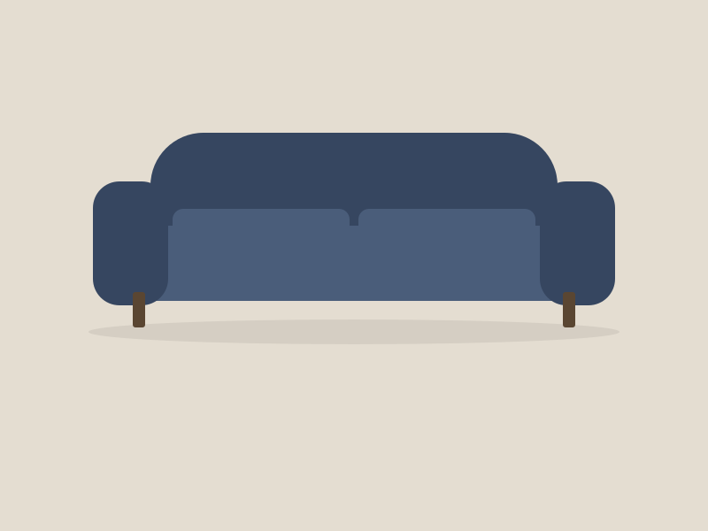

Sofa
Skagen Loveseat
€990.00
Item no. NH-1005
A small loveseat in deep navy. A calm statement piece for the hallway, bedroom or study.
Dimensions
- Width: 140 cm
- Depth: 82 cm
- Height: 75 cm
Material & Construction
- Frame: solid pine
- Cushions: polyurethane foam
- Upholstery: recycled polyester velvet, navy
Features & Feel
- Medium-firm seat
- Soft velvet touch
- Light enough for two people to carry